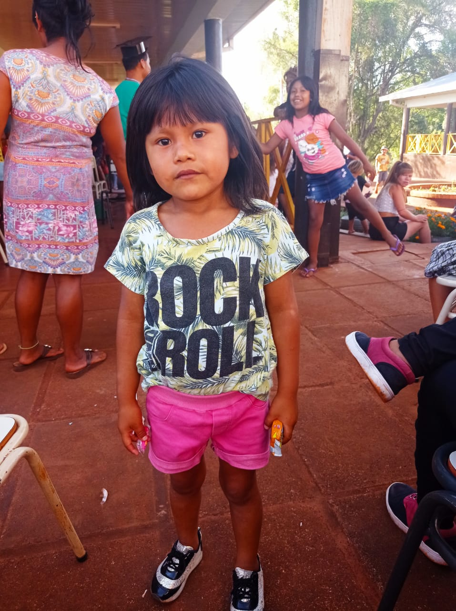

<section id="howWeAreBody ">
  <div class="howWeAreBody mt-5 mb-5">
    <div class="row">
      <div class="col-lg-7">
        
      </div>
      <div class="col-lg-5">
        <div class="row mb-5">
          <p class="fs-5 text-start" data-aos="fade-right">
            Somos un grupo de mujeres docentes, nutricionistas, trabajadoras
            sociales entre otros especialistas, que como madres, abuelas, hijas
            nos preocupamos en aportar nuestro granito de arena para erradicar
            la pobreza y desnutrición infantil <a href="https://www.unicef.org/argentina/comunicados-prensa/segunda-encuesta-rapida-pobreza">(según UNICEF la pobreza infantil
            es del 62,9%)</a> con esto en mente, la fundación busca facilitarle los
            recursos y principalmente la educación para que estos niños, niñas y
            adolescentes tengan un futuro garantizado.
          </p>
        </div>
        <div class="row mt-5" data-aos="fade-right">
          <div class="col">
          
          <p class="mt-3 fs-5">
            “no le temo a la cosecha porque se lo que sembre”
          </p>
          <b class="mt-3 fs-5">Marcela Molina</b>
        </div>
        </div>
      </div>
    </div>
  </div>
</section>
